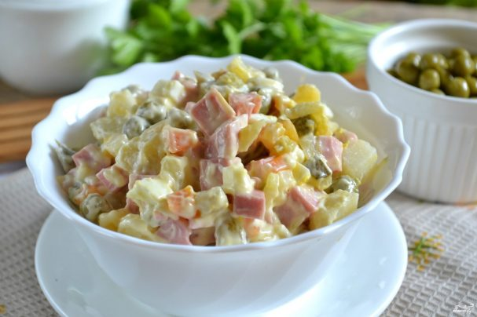

Салат "Оливье" классический с колбасой

Описание приготовления: Салат "Оливье" очень простой в приготовлении, и каждая хозяйка сможет побаловать своих родных и гостей этим вкусным и сытным блюдом. Залогом успеха в приготовлении салата являются правильно подобранные ингредиенты. Вареная колбаса должна быть свежей и качественной. Ее цена не должна быть ниже цены мяса. Берите докторскую или молочную "варёнку". Горошек берите мозговых сортов. Он более нежный и сладкий. Майонез также выбирайте жирный, так как этот соус делается из подсолнечного масла и желтков, и он не может иметь низкую жирность. Или, как вариант, сделайте майонез сами. Теперь я вам подробно расскажу, как приготовить салат "Оливье" классический с колбасой по моему рецепту. Вам понадобится немного времени и усилий — и этот салат украсит ваш стол. Ингредиенты:
Как приготовить "Салат "Оливье" классический с колбасой
|